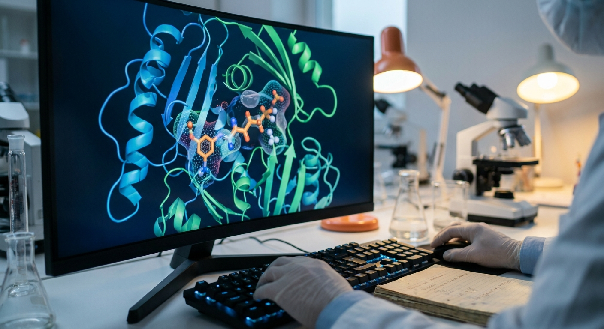

Research Engines
Understand biology.
Design what comes next.
We are advancing models for cellular understanding and molecular generation, with a focus on immunology, immuno-oncology and cyclic peptides. These research programs build on the data, execution and evaluation capabilities of the BioMate workbench.
Virtual Cell LLM
Active research programFrom cellular state
to testable hypotheses.
Our Virtual Cell LLM research explores how models of cellular state and response can inform target identification and other biomedical decisions.
We aim to connect multi-omics evidence, biological context and perturbation reasoning so researchers can prioritize hypotheses for experimental testing.
Molecular generation
Active research programExplore new
cyclic-peptide candidates.
We are developing structure-aware generation models for cyclic peptides, bringing target context and molecular structure into candidate design.
How it works. Candidates are generated conditioned on the target and its binding site, then scored computationally for predicted binding, structural plausibility and developability. The highest-ranked designs advance to a shortlist for synthesis and testing.
Where it is applied. Our current focus is an immune and immuno-oncology target class, where cyclic peptides can reach binding interfaces that are difficult for conventional small molecules.
Each round connects generation, computational evaluation and assay feedback, allowing results to inform the next design. Candidates remain hypotheses until tested experimentally.

The research loop
Design, evaluate,
test and learn.
Design
Generate cyclic-peptide candidates conditioned on the target and its binding site.
Computational evaluation
Score and rank candidates for predicted binding, structure and developability.
Synthesis & assays
Synthesize the shortlist and measure binding and function experimentally.
Model update
Feed assay results back to refine the models and the next round of design.
The loop runs continuously: every round of experimental results feeds the next generation of designs.
One scientific foundation
Models connected
to the research process.
Biological context
Ground scientific questions in evidence, data and disease mechanisms.
Computational evaluation
Compare model outputs through explicit tasks, baselines and reproducible analyses.
Experimental learning
Use observed results to challenge predictions and guide future research.